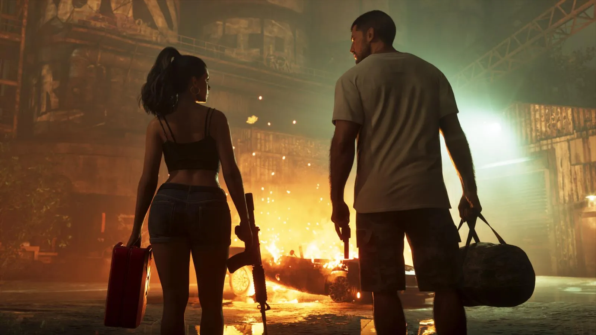
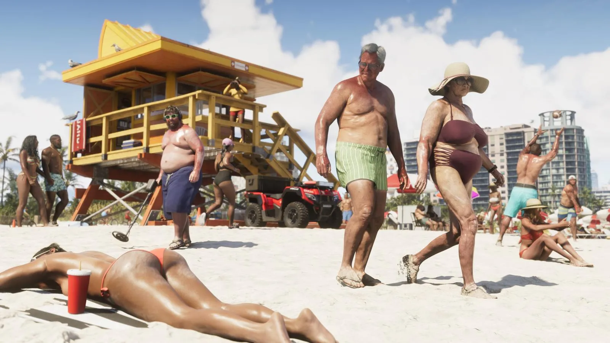

GTA 6 и 30 FPS: что подтвердила Rockstar
Опубликовано:

- На консолях GTA 6 сейчас работает в 30 кадрах в секунду — это подтвердил Роб Нельсон из Rockstar North.
- Будет ли режим 60 FPS — на старте или позже — Rockstar пока не решила.
- Digital Foundry: «Расширенный показ» снят на обычной PS5, разрешение 2560×1440, стабильные 30 кадров.
- Про PS5 Pro отдельных обещаний нет.
Что сказала Rockstar
После выхода «Расширенного показа» 27 августа 2026 года («Расширенный показ» GTA 6: что показали за 26 минут — с таймкодами) Роб Нельсон, один из руководителей Rockstar North, рассказал бразильскому видеографу Davy Jones, что GTA 6 на консолях сейчас работает примерно в 30 кадрах в секунду. На вопрос о 60 кадрах он ответил, что это нужно обсудить с технической командой.
Официального заявления в Rockstar Newswire о частоте кадров нет — есть только эти слова Нельсона.
Что нашли Digital Foundry
Технические эксперты Digital Foundry разобрали «Расширенный показ». По их данным, ролик снят на обычной PS5, игра выводит картинку в нативном разрешении 2560×1440 и держит стабильные 30 кадров с редкими одиночными просадками.

Будет ли 60 FPS
- Режим производительности на 60 кадров Rockstar не подтверждала и не отменяла.
- Отдельных улучшений для PS5 Pro Rockstar не объявляла.
- Версия для ПК не анонсирована — подробнее в статье GTA 6 на ПК: когда выйдет.
Как было в прошлых играх
Red Dead Redemption 2 вышла на PS4 и Xbox One в 30 кадрах, и режима на 60 кадров для консолей так и не появилось. GTA 5 на PS5 и Xbox Series X|S получила режим производительности уже в переиздании 2022 года — спустя девять лет после первого выхода.
Источники: Push Square, 08.2026; TweakTown; GTABoom — слова Роба Нельсона (Rockstar North) видеографу Davy Jones; Digital Foundry — технический разбор «Расширенного показа» (по TweakTown и TechRadar).
Каждый день — одно сравнение: кадр игры рядом с реальным фото. Подписывайтесь:
YouTubeInstagramTikTok